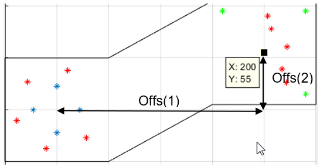
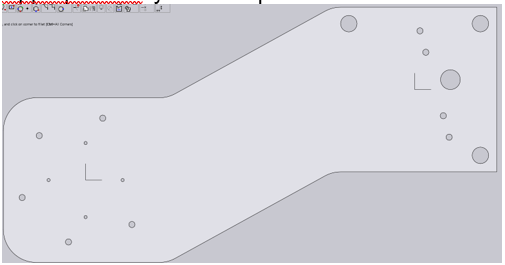
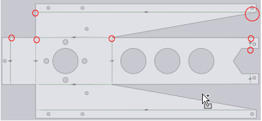
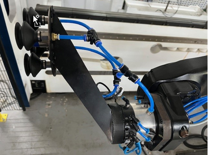
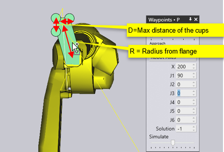
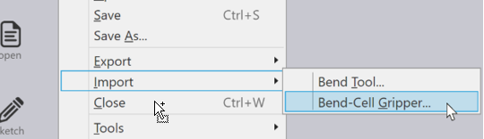
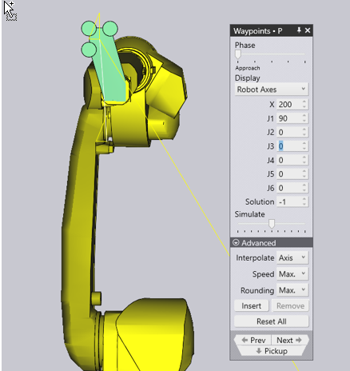
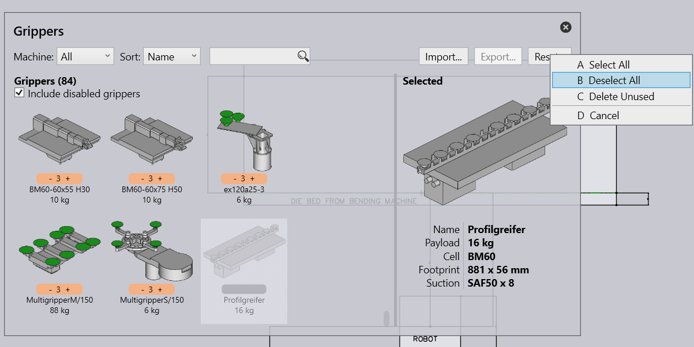

Gripper tool
A good gripper is often the key to a good bend sequence in FluxBend. The gripper tool creates for you a laser cut gripper as well as the .dat and .stl file to import them into flux.
Usage of the Gripper designer tool:
The gripper tool is parametrized by: Rob=[45,0;0,45;-45,0;0,-45]/2; The pattern of the screw holes towards the clutch (blue) offs=[200,55,30]; Offset value of the suction cup field (x,y,z) Vac=[-40 40;40 40;40 -40]; The pattern of the vacuum cup holes (green) The red dots are the M3 holes for connection the upper and lower part

The tool creates the dxf drawings for the upper and lower case.
Upperpart.dxf: you could put some additional radiuses on the part

Lowerpart.dxf
-
First reduce all bending cuts’ by 3mm (red)
-
The mirror the part
-
Insert the bend lines
-
Then delete the duplicated parts


The preferred nomenclature for a gripper is in the following notation: e.g. R200D80
R = OffsetRadius of the gripper (200mm) D = Max distance of the suction cups (80mm)

Import the Gripper in Flux
The Gripper tool creates an additional stl and dat file that this gripper design could be imported into Flux:

Double check that the mounted gripper on the clutch directs in the same way than your Flux model

Gripper data base
There are hundreds of different grippers available for use with the BendMaster. You can usually import these gripper models from ARV files, and you can configure the inventory of grippers so Flux knows the actual grippers you have on your shopfloor. A Flux installation comes with a set of commonly-used grippers already pre-installed, but this set can be edited.
Click on the Database icon and choose the Bend-Gripper Inventory option to open the Gripper Inventory panel.
This panel displays all the grippers that have been installed. From this set of all the installed grippers, some of them can be enabled for use. Only these enabled grippers will show up in the gripper selection lists, and only these will be used by Flux during computation.
-
You can use the Sort options to arrange the grippers by name, by size, etc.
-
Use the Import button here to import additional grippers from ARV files.
-
Use the Reset button to select, or de-select all the grippers, and to delete any unused grippers. Take care when you do this - if you do not have the ARV files, you cannot get back the original grippers.
In addition, you can also import grippers using the option from the Import menu:
|
Tip
|
To keep an overview of the grippers you could disable grippers by CTRL-click |

To delete a gripper permanently RIghtclick on the gripper and click on Reset, then select Delete unused to delete the gripper